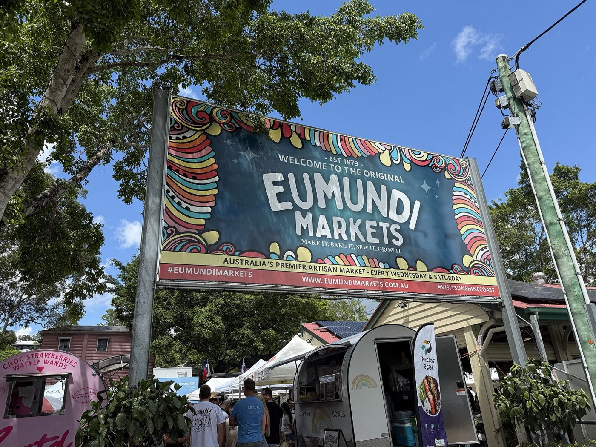

8 minutes · 7 km
The Eumundi
Markets
The reason most people have heard of Eumundi. Running since 1979 and now the biggest art and craft market in the country — somewhere over 350 stalls sprawling under the fig trees, with live music and more coffee than is strictly sensible.
- Wednesdays and Saturdays, roughly 7am to 2pm — Saturday is the big one
- Go early. By ten the car parks are a competitive sport
- Makers, produce, plants, hot food, and a great deal of tie-dye
- The village itself is worth an hour afterwards — two pubs, good bakeries